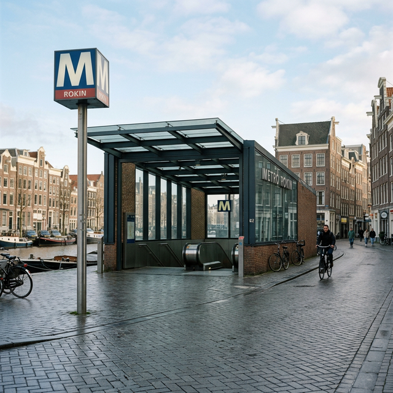
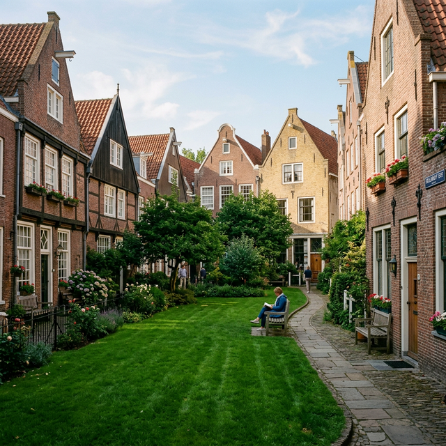
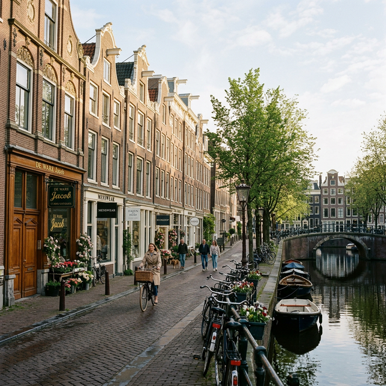
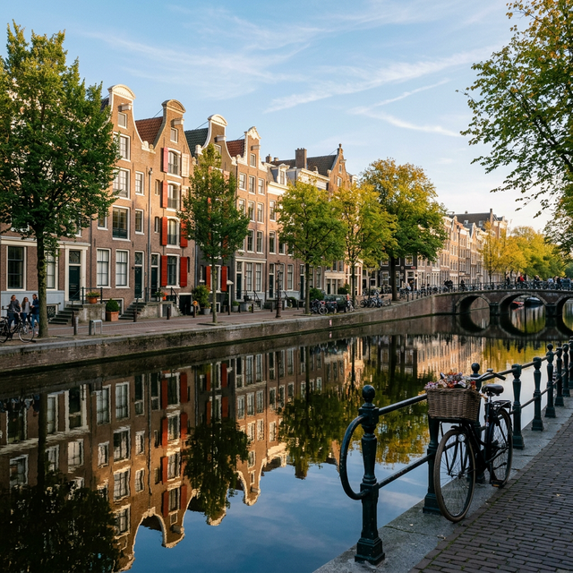
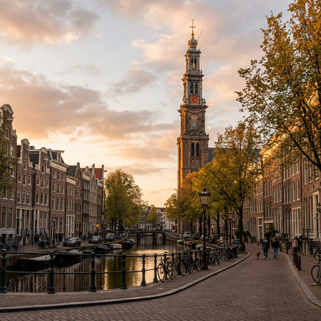
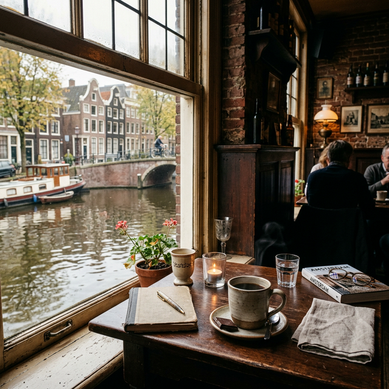
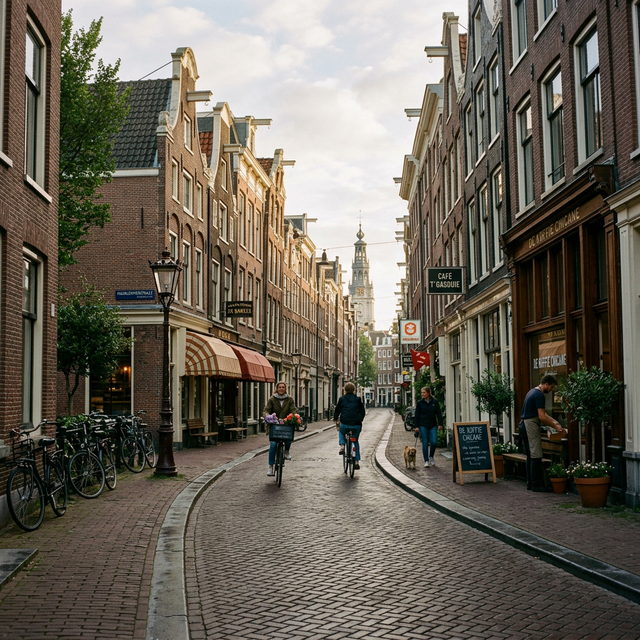
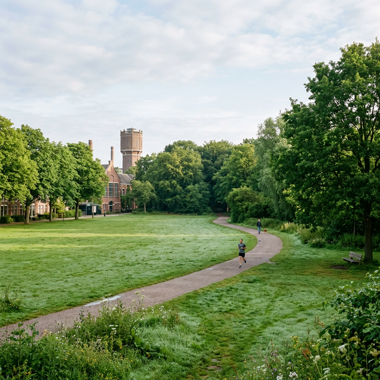
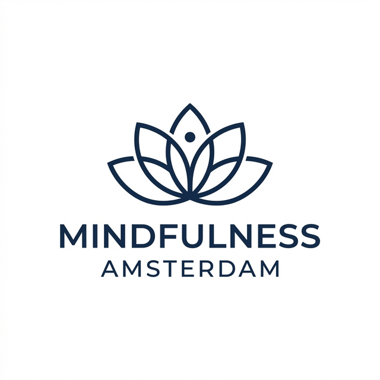
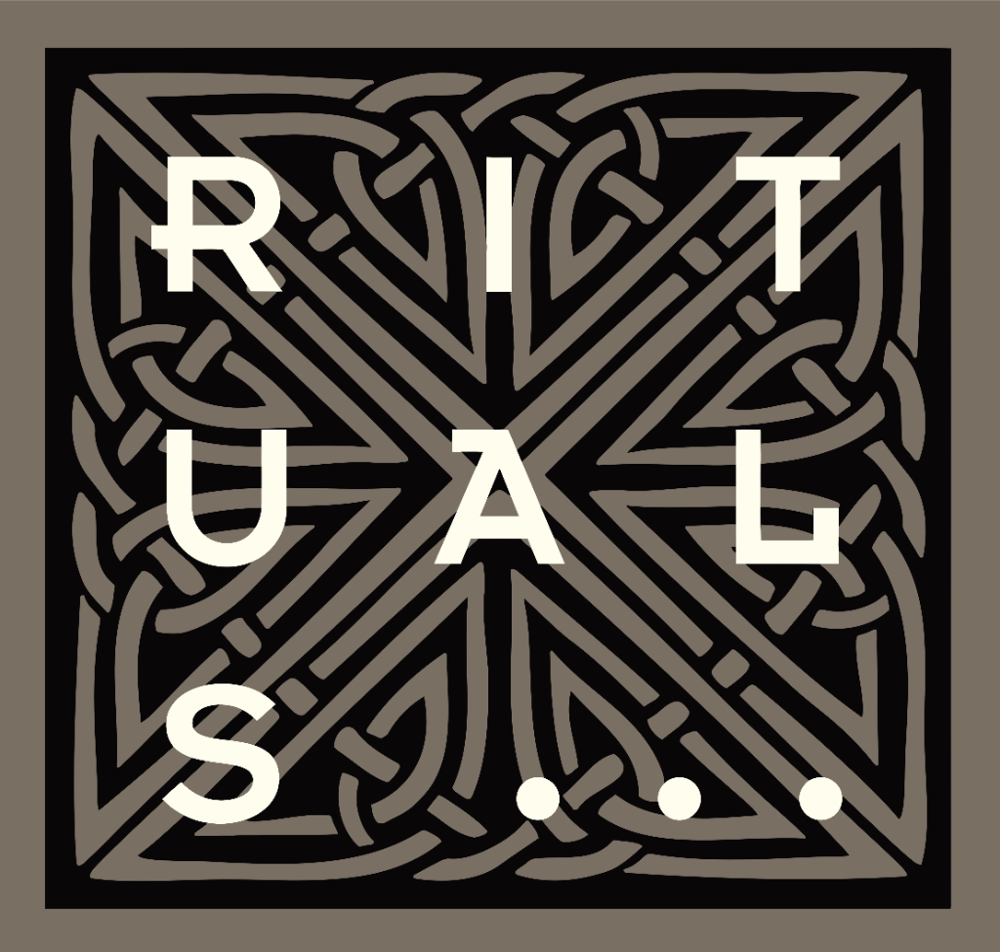

×

Ontdek de rustige en betekenisvolle plekken van Amsterdam. Een ontspannen wandeling, speciaal gecreëerd voor hen die veel geven in hun dagelijks werk en een moment nodig hebben om op te laden in hun eigen stad.
Amsterdam is in 750 jaar uitgegroeid tot een bruisende, prikkelrijke stad, maar mensen hebben altijd gezocht naar de stille plekken erbinnen. Deze tour neemt je mee naar die plekken.
Zorgmedewerkers ervaren vaak een hoge werkdruk, onregelmatige diensten en mentale belasting. Daarom is deze tour ontworpen als een korte, vredige en betekenisvolle ervaring om even op adem te komen in eigen stad.
Ontdek stille straatjes en historische hofjes weg van de drukte.
Max. 10 personen voor een intieme en persoonlijke ervaring.
Een warm moment bij een klassiek lokaal café.
Een kort integratiemoment om echt tot rust te komen in het groen.
Een betekenisvolle wandeling die aanvoelt als één verbonden verhaal van rust, balans en reflectie.

Het drukke beginpunt waar we de hectiek van de stad achter ons laten en ons richten op de rust van het water.

Een stil, historisch hofje midden in de stad waar al eeuwenlang stilte wordt bewaard.

Karakteristieke Negen Straatjes waar we details in de architectuur leren zien die je normaal voorbijloopt.

Een kalme gracht waar water en de groei van de stad op harmonieuze wijze samenkomen.

Een symbool van Amsterdam dat rust en overzicht biedt over de Jordaan.

Een warme koffiepauze in een klassieke, lokale bruine kroeg die geborgenheid biedt en verbinding maakt met de buurt.

Een mix van lokaal leven en ontspannen sfeer richting ons eindpunt in het groen.

Het groene eindpunt van de tour. Hier doen we een korte mindfulness oefening om de ervaring te landen.
Duur: ~1 uur en 55 minuten | Maximaal 10 personen | Start: Centrum, Einde: Westerpark
Reguliere deelname aan de wandeling.
Speciaal tarief voor medewerkers in de zorg.
(Opgeladen batterij gegarandeerd)
Met een team of collega's de stad ontdekken (tot 10 personen).
Samen maken we deze betekenisvolle ervaring mogelijk in de stad.
Hoofdpartner Zorg

Welzijn & Balans
Culturele verbinding

Ontspanning
Lokale gastvrijheid
Deze tour is primair ontworpen voor zorgmedewerkers van 25 jaar en ouder die in Amsterdam wonen en werken. Het is voor iedereen die veel geeft in zijn of haar werk en behoefte heeft aan een zacht, betekenisvol moment in de eigen stadsomgeving.
De wandeling duurt ongeveer 1 uur en 55 minuten. Dit is inclusief een rustige koffiepauze halverwege en een korte, geleide mindfulness afsluiting in het park.
Nee, we lopen in een ontspannen tempo met voldoende stopmomenten. Het gaat niet om de afstand, maar om het bewust en rustig ervaren van de stedelijke omgeving.
De begeleiding door een gids, de verhalen over de stad en de architectuur, de koffie of thee naar keuze bij Café ’t Papeneiland, en de begeleide mindfulness oefening aan het eind van de route.